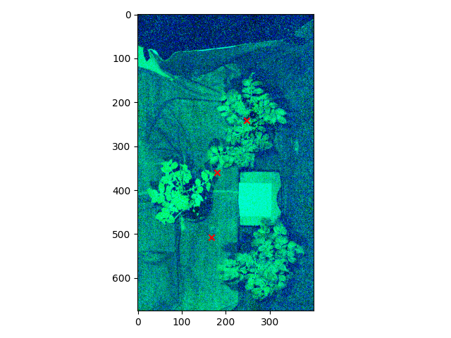
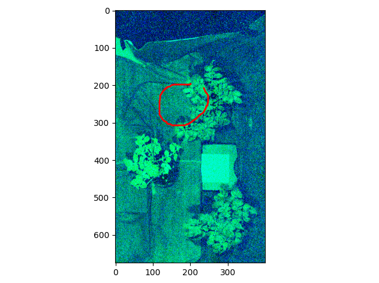

Case Study
This section offers an overview of a case study based on real-world data.
💡 All code snippets used in this case study are available in the GitHub repository.
To follow along:
- Download sample data: Access the hyperspectral image dataset from Zenodo
- Install SiaPy: Follow our installation instructions
📋 Data Overview¶
The hyperspectral dataset used in this case study was acquired using Hyspex push-broom cameras from Norsk Elektro Optikk (Oslo, Norway), covering two spectral regions:
| Camera | Spectral Range | Bands | Bandwidth |
|---|---|---|---|
| VNIR-1600 | Visible to near-infrared (400–988 nm) | 160 | 3.6 nm |
| SWIR-384 | Short-wave infrared (950–2500 nm) | 288 | 5.4 nm |
Note: All hyperspectral data is provided as calibrated reflectance values, ensuring accuracy and reliability for your analysis.
📁 File Naming Convention¶
Understanding the file naming convention is crucial for working with the dataset:
L1_L2_L3__test__ID_CAM.img -> Image file
L1_L2_L3__test__ID_CAM.hdr -> Header file corresponding to the image file
The file names encode important metadata:
| Component | Description | Example |
|---|---|---|
| V-T-N (Labels; L) | Plant identification | KK-K-04 |
| V (Variety) | Plant variety | KK: KIS Krka, KS: KIS Savinja |
| T (Treatment) | Experimental treatment | K: Control, S: Drought |
| N (Index) | Plant identifier | 04: Plant #4 |
| ID | Random acquisition ID | 18T102331 |
| CAM | Camera type | corr: VNIR, corr2: SWIR |
🚀 Validation Setup¶
Before diving into the examples, verify that your SiaPy installation and data are correctly configured:
try:
from pathlib import Path
from siapy.entities import SpectralImageSet
print("Libraries detected successfully.")
except ImportError as e:
print(f"Error: {e}. Please ensure that the SiaPy library is installed and the environment is activated.")
exit(1)
# Set the path to the directory containing the data
# !! ADJUST THIS PATH TO YOUR DATA DIRECTORY !!
data_dir = "./docs/examples/data"
# Find all header and image files in the data directory
header_paths = sorted(Path(data_dir).rglob("*.hdr"))
image_paths = sorted(Path(data_dir).rglob("*.img"))
# Create a SpectralImageSet from the found paths
image_set = SpectralImageSet.spy_open(
header_paths=header_paths,
image_paths=image_paths,
)
# Check if the data was loaded correctly
if len(image_set) > 0:
print("Loading succeeded.")
else:
print("Loading did not succeed.")
Warning
If you encounter issues:
- Check that SiaPy is properly installed and your environment is activated
- Verify that you've downloaded the example data
- Ensure the `data_dir` variable points to the correct location of your dataset
- Make sure both `.img` and `.hdr` files are present in your data directory
🧪 Source Code Examples¶
Working with SpectralImage Objects¶
Example:
from pathlib import Path
import spectral as sp
from siapy.entities import SpectralImage
from siapy.entities.images import SpectralLibImage
# Set the path to the directory containing the data
# !! ADJUST THIS PATH TO YOUR DATA DIRECTORY !!
data_dir = "./docs/examples/data"
# Find all header and image files in the data directory
header_paths = sorted(Path(data_dir).rglob("*.hdr"))
image_paths = sorted(Path(data_dir).rglob("*.img"))
header_path_img0 = header_paths[0]
image_path_img0 = image_paths[0]
# Load the image using spectral library and then wrap over SpectralImage object
sp_file = sp.envi.open(file=header_path_img0, image=image_path_img0)
assert not isinstance(sp_file, sp.io.envi.SpectralLibrary)
image = SpectralImage(SpectralLibImage(sp_file))
# or you can do the same just by running
image = SpectralImage.spy_open(
header_path=header_path_img0,
image_path=image_path_img0,
)
# Now you can easily use various property and util functions of the SpectralImage object
# Get the shape of the image
print("Image shape:", image.shape)
# Get the number of bands
print("Number of bands:", image.bands)
# Get the wavelength information
print("Wavelengths:", image.wavelengths)
# Get the file path
print("File path:", image.filepath)
# Get the metadata
print("Metadata:", image.metadata)
# Get the number of rows
print("Number of rows:", image.image.rows)
# Get the number of columns
print("Number of columns:", image.image.cols)
# Get the default bands
print("Default bands:", image.default_bands)
# Get the description
print("Description:", image.image.description)
# Get the camera ID
print("Camera ID:", image.camera_id)
# Get the geometric shapes
print("Geometric shapes:", image.geometric_shapes)
Source: spectral_image_01.py
Key Concepts:
- Multiple Loading Methods: The script demonstrates two ways to load a hyperspectral image:
- Using the SpectralPython library directly and wrapping with SiaPy
- Using SiaPy's simplified
spy_open()method - Property Access: Shows how to access fundamental image properties through the SpectralImage interface:
- Shape, dimensions (rows, columns), and spectral bands
- Wavelength information for each band
- File metadata and path information
- Camera identification and associated geometric data
💡 Implementation Note: This script uses SiaPy's property decorators for read-only access to image attributes, following the library's design pattern for consistent data access.
Example:
from pathlib import Path
import matplotlib.pyplot as plt
from siapy.entities import Pixels, SpectralImage
# Set the path to the directory containing the data
# !! ADJUST THIS PATH TO YOUR DATA DIRECTORY !!
data_dir = "./docs/examples/data"
# Get first image
header_path_img0 = sorted(Path(data_dir).rglob("*.hdr"))[1]
image_path_img0 = sorted(Path(data_dir).rglob("*.img"))[1]
# Load spectral image
image = SpectralImage.spy_open(
header_path=header_path_img0,
image_path=image_path_img0,
)
# Convert to numpy
image_np = image.to_numpy(nan_value=0.0)
print("Image shape:", image_np.shape)
# Calculate mean
mean_val = image.average_intensity(axis=(0, 1))
print("Mean value per band:", mean_val)
# Create a Pixels object from an iterable with pixels coordinates
# The iterable should be a list of tuples representing (x, y) coordinates
# iterable == [(x1, y1), (x2, y2), ...] -> list of pixels
iterable = [(1, 2), (3, 4), (5, 6)]
pixels = Pixels.from_iterable(iterable)
# Convert the pixel coordinates to spectral signatures
signatures = image.to_signatures(pixels)
print("Signatures:", signatures)
# Extract a subarray from the image using the pixel coordinates
subarray = image.to_subarray(pixels)
print("Subarray shape:", subarray.shape)
# Convert to displayable image
display_image = image.to_display(equalize=True)
# Display the image using matplotlib
plt.figure()
plt.imshow(display_image)
plt.axis("off") # Hide axes for better visualization
plt.show()
Source: spectral_image_02.py
Key Concepts:
- Array Conversion: Converting a SpectralImage to NumPy arrays for numerical processing
- Statistical Analysis: Computing band-wise statistics like mean intensity values
- Pixel Handling: Creating and manipulating Pixels objects from coordinate data
- Data Extraction: Methods for extracting spectral signatures and subarrays from specific image regions
- Visualization: Converting hyperspectral data to displayable RGB images with optional histogram equalization
💡 Implementation Note: Notice how methods follow SiaPy's naming convention: converters use
to_prefix (e.g.,to_numpy(),to_signatures(),to_display()), while calculation methods use descriptive verbs.
Managing Image Collections¶
Example:
from pathlib import Path
from siapy.entities import SpectralImageSet
# Set the path to the directory containing the data
# !! ADJUST THIS PATH TO YOUR DATA DIRECTORY !!
data_dir = "./docs/examples/data"
# Find all header and image files in the data directory
header_paths = sorted(Path(data_dir).rglob("*.hdr"))
image_paths = sorted(Path(data_dir).rglob("*.img"))
# Create a SpectralImageSet from the found paths
imageset = SpectralImageSet.spy_open(
header_paths=header_paths,
image_paths=image_paths,
)
# Now you can easily use various properties and utility functions of the SpectralImageSet object.
# First, let's sort the images:
print("Unsorted: ", imageset.images)
imageset.sort()
print("Sorted: ", imageset.images)
# Get the number of images in the set
print("Number of images in the set:", len(imageset))
# Get the cameras ID
print("Cameras ID:", imageset.cameras_id)
# Iterate over images and print their shapes
for idx, image in enumerate(imageset):
print(f"Image {idx} shape:", image.shape)
# Get images by camera ID
camera_id = imageset.cameras_id[0]
images_by_camera = imageset.images_by_camera_id(camera_id)
print(f"Number of images by camera {camera_id}:", len(images_by_camera))
Source: spectral_imageset_01.py
Key Concepts:
- Batch Loading: Loading multiple spectral images into a unified SpectralImageSet container
- Collection Management: Organizing and sorting images within the set
- Metadata Access: Efficient access to collection properties (size, camera IDs)
- Iteration Patterns: Iterating through the image collection with standard Python iteration
- Filtering and Selection: Selecting images by specific criteria (e.g., camera ID)
💡 Implementation Note: SpectralImageSet implements standard Python container interfaces, making it behave like a familiar collection type with additional hyperspectral-specific functionality.
Interactive Pixel and Area Selection¶
Example:
from pathlib import Path
from siapy.entities import SpectralImage
from siapy.utils.plots import pixels_select_click
# Set the path to the directory containing the data
# !! ADJUST THIS PATH TO YOUR DATA DIRECTORY !!
data_dir = "./docs/examples/data"
# Get arbitrary image
header_path_img0 = sorted(Path(data_dir).rglob("*.hdr"))[1]
image_path_img0 = sorted(Path(data_dir).rglob("*.img"))[1]
# Load spectral image
image = SpectralImage.spy_open(
header_path=header_path_img0,
image_path=image_path_img0,
)
# Select pixels from the image
pixels = pixels_select_click(image)
# ? Press enter to finish the selection
print("Pixels:", pixels.df)
Source: visualization_01.py
The selected pixels are highlighted in the image below.

Key Concepts:
- Interactive Selection: Using SiaPy's interactive tools to select specific pixels from displayed images
- Point-Based Analysis: Selecting individual points for detailed spectral analysis
- User Interaction: Simple keyboard-based interaction model (press Enter to finish selection)
- Results Access: Accessing the resulting Pixels object and its DataFrame representation
💡 Implementation Note: The
pixels_select_clickfunction handles the display, interaction, and collection of pixel coordinates in a single operation, simplifying user interaction code.
Example:
from pathlib import Path
from siapy.entities import SpectralImage
from siapy.utils.plots import pixels_select_lasso
# Set the path to the directory containing the data
# !! ADJUST THIS PATH TO YOUR DATA DIRECTORY !!
data_dir = "./docs/examples/data"
# Get arbitrary image
header_path_img0 = sorted(Path(data_dir).rglob("*.hdr"))[1]
image_path_img0 = sorted(Path(data_dir).rglob("*.img"))[1]
# Load spectral image
image = SpectralImage.spy_open(
header_path=header_path_img0,
image_path=image_path_img0,
)
# Select areas from the image
areas = pixels_select_lasso(image)
# ? Press enter to finish the selection
# Print the selected areas
for i, area in enumerate(areas):
print(f"Area {i}:", area)
Source: visualization_02.py
The selected areas are highlighted in the image below.

Key Concepts:
- Region Selection: Using SiaPy's lasso tool to define irregular regions of interest
- Multiple Areas: Creating and managing multiple selected areas within a single image
- Polygon-Based Selection: Defining complex shapes for region-based analysis
- Selection Management: Organized representation of selected areas for further processing
💡 Implementation Note: Selected areas are returned as a list of Pixels objects, each representing a distinct region that can be separately analyzed or processed.
Image Transformation and Processing¶
Example:
from pathlib import Path
from siapy.entities import SpectralImage
from siapy.transformations import corregistrator
from siapy.utils.plots import pixels_select_click
# Set the path to the directory containing the data
# !! ADJUST THIS PATH TO YOUR DATA DIRECTORY !!
data_dir = "./docs/examples/data"
# Get first image
header_path_img0 = sorted(Path(data_dir).rglob("coregister*corr2_rad_f32.hdr"))[0]
image_path_img0 = sorted(Path(data_dir).rglob("coregister*corr2_rad_f32.img"))[0]
header_path_img1 = sorted(Path(data_dir).rglob("coregister*corr_rad_f32.hdr"))[0]
image_path_img1 = sorted(Path(data_dir).rglob("coregister*corr_rad_f32.img"))[0]
# Load VNIR and SWIR spectral images
image_swir = SpectralImage.spy_open(
header_path=header_path_img0,
image_path=image_path_img0,
)
image_vnir = SpectralImage.spy_open(
header_path=header_path_img1,
image_path=image_path_img1,
)
# Select the same pixels in both images.
# The more points you select, the better the transformation between image spaces will be.
# Click enter to finish the selection.
pixels_vnir = pixels_select_click(image_vnir)
pixels_swir = pixels_select_click(image_swir)
# Perform the transformation and transform the selected pixels from the VNIR image to the space of the SWIR image.
matx, _ = corregistrator.align(pixels_swir, pixels_vnir, plot_progress=False)
print("Transformation matrix:", matx)
Source: transformations_01.py
Key Concepts:
- Control Point Selection: Interactive selection of corresponding points in VNIR and SWIR images
- Coordinate Mapping: Establishing relationships between points in different spectral spaces
- Transformation Calculation: Computing the mathematical transformation between coordinate systems
- Spatial Alignment: Creating a foundation for aligning multi-sensor hyperspectral data
💡 Implementation Note: The
corregistrator.align()function computes a transformation matrix that can transform coordinates from one image space to another, essential for multi-sensor data fusion.
Example:
from pathlib import Path
import numpy as np
from siapy.entities import SpectralImage
from siapy.transformations import corregistrator
from siapy.utils.plots import display_multiple_images_with_areas, pixels_select_lasso
# Set the path to the directory containing the data
# !! ADJUST THIS PATH TO YOUR DATA DIRECTORY !!
data_dir = "./docs/examples/data"
# Get first image
header_path_img0 = sorted(Path(data_dir).rglob("*.hdr"))[0]
image_path_img0 = sorted(Path(data_dir).rglob("*.img"))[0]
header_path_img1 = sorted(Path(data_dir).rglob("*.hdr"))[1]
image_path_img1 = sorted(Path(data_dir).rglob("*.img"))[1]
# Load VNIR and SWIR spectral images
image_swir = SpectralImage.spy_open(
header_path=header_path_img0,
image_path=image_path_img0,
)
image_vnir = SpectralImage.spy_open(
header_path=header_path_img1,
image_path=image_path_img1,
)
# Transformation matrix was calculated in previous example
matx = np.array(
[
[5.10939099e-01, -3.05286868e-03, -1.48283389e00],
[-2.15777211e-03, 5.17836773e-01, -2.50694723e01],
[3.02412467e-18, 7.36518494e-18, 1.00000000e00],
]
)
# Select area of the image
# Click enter to finish the selection.
selected_areas_vnir = pixels_select_lasso(image_vnir)
# Transform the selected areas from the VNIR image to the space of the SWIR image.
selected_areas_swir = [corregistrator.transform(pixels_vnir, matx) for pixels_vnir in selected_areas_vnir]
# Display the selected areas in both images
display_multiple_images_with_areas(
[
(image_vnir, selected_areas_vnir),
(image_swir, selected_areas_swir),
],
plot_interactive_buttons=False,
)
Source: transformations_02.py
Key Concepts:
- Area Selection: Using the lasso tool to select regions in one spectral range
- Coordinate Transformation: Applying the transformation matrix to map selected areas between images
- Cross-Spectral Analysis: Enabling analysis of the same physical regions across different spectral data
- Visual Verification: Displaying both images with highlighted areas to verify correct transformation
💡 Implementation Note: The transformation is applied to the Pixels objects directly, allowing selected regions to be mapped between different spectral ranges while preserving their shape relationships.
Example:
from pathlib import Path
from siapy.entities import SpectralImage
from siapy.transformations.image import (
add_gaussian_noise,
area_normalization,
random_crop,
random_mirror,
random_rotation,
rescale,
)
# Set the path to the directory containing the data
# !! ADJUST THIS PATH TO YOUR DATA DIRECTORY !!
data_dir = "./docs/examples/data"
# Get first image
header_path_img0 = sorted(Path(data_dir).rglob("*.hdr"))[0]
image_path_img0 = sorted(Path(data_dir).rglob("*.img"))[0]
# Load VNIR and SWIR spectral images
image_swir = SpectralImage.spy_open(
header_path=header_path_img0,
image_path=image_path_img0,
)
# Convert image to numpy array
image_swir_np = image_swir.to_numpy()
# Apply transformations to image_swir
# Add Gaussian noise
noisy_image = add_gaussian_noise(image_swir_np, mean=0.0, std=1.0, clip_to_max=True)
# Random crop
cropped_image = random_crop(image_swir_np, output_size=(100, 100))
# Random mirror
mirrored_image = random_mirror(image_swir_np)
# Random rotation
rotated_image = random_rotation(image_swir_np, angle=45)
# Rescale
rescaled_image = rescale(image_swir_np, output_size=(200, 200))
# Area normalization
normalized_image = area_normalization(image_swir_np)
Source: transformations_03.py
Key Concepts:
- Noise Injection: Adding controlled Gaussian noise for robustness testing or data augmentation
- Spatial Transformations: Applying geometric operations including
- Normalization: Area-based normalization for standardizing image intensity distributions
- Data Augmentation: Creating modified versions of images for machine learning training
💡 Implementation Note: All transformation functions follow a consistent input/output pattern, taking NumPy arrays as input and returning the transformed arrays, making them easily composable for complex processing pipelines.
This case study was created with SiaPy latest version. If you encounter any issues, please check for updates or report them on GitHub.